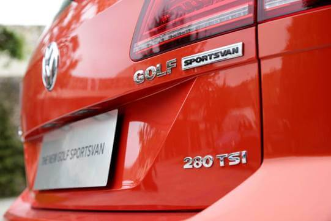
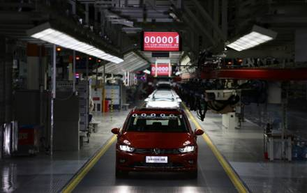

3月30日，备受期待的全新高尔夫·嘉旅在深圳举办了规模盛大的试驾体验会；
作为一款集成高尔夫优质基因和更多实用功能于一体的全新车型，全新高尔夫·嘉旅是一款满足多种生活方式需求的“都市多功能两厢车”；
一个热爱生活的时尚人士、一款高性能多功能车，能擦出怎样的绚烂“火花”？
阳春三月的深圳草长莺飞，绿树成荫的深南大道处处萌发着春的生机，怀着满心对旅行的期待，准备好轻松的心态，我们踏上了期待已久的全新高尔夫·嘉旅媒体试驾会——“最嘉旅程”。
全新高尔夫·嘉旅列队静待驾驭
在正式试驾之前，与媒体朋友谈起全新高尔夫·嘉旅时，有人就把它和第七代高尔夫的关系调侃为iPhone6 Plus和iPhone6，但深究之下却并非那么简单。虽然同样来自集齐了众多大众热门车型的MQB平台，但全新高尔夫·嘉旅在保持高尔夫家族的运动基因和纯粹性能之外，还拥有更大的空间、更丰富的配置，堪称是一款宜家、宜商、宜旅，能够满足用户多样化用车需求的都市多功能两厢车。
颜值担当：超越经典的实力偶像派
高尔夫家族谱写了一部传奇巨著，一直享有“神车家族”的美誉。早在2005年，就推出了基于PQ35平台打造的大众高尔夫Plus车型，在欧洲市场受到众多年轻消费群体的热烈欢迎。历经9年的演化升级，高尔夫Plus在2014年正式被高尔夫Sportsvan取代，而时间仅仅过了一年，一汽-大众便将Sportsvan引入国内，并赋予了它一个饱含深意的名字——全新高尔夫·嘉旅。
全新高尔夫·嘉旅整体外观造型动感大气、经典灵动
全新高尔夫·嘉旅基于第七代高尔夫车型打造，在保持了高尔夫动感时尚造型风格的同时，体型更加修长、高大。为了打造宽敞的车内空间，加入了高车身、直后背、短前悬等元素，整体风格动感大气、经典灵动，又添一份稳重扎实、圆润饱满。
全新高尔夫·嘉旅“X型”前脸视觉冲击力十足
乍一看车头，便有种似曾相识的感觉，依旧的“高尔夫”风格。横向贯穿式进气格栅简洁大气，前灯内部的装饰条与进气格栅交相呼应，而发动机盖上的折线与车灯，保险杠等部分完美组成了“X型”前脸，线条锐利，视觉冲击力十足；车身侧面的线条在保持了高尔夫家族一贯流畅动感的同时，A柱的位置更向前探，不仅带来了大尺寸的视野空间，也带来了更好的车内空间。两条平直犀利的腰线贯穿侧面车身，同时将侧面1：1对称分割，呈现出完美的车身比例。
全新高尔夫·嘉旅侧面呈现出完美的车身比例
转至尾部，大尺寸视野空间和最优能见度是横贯车尾的核心主题。醒目的梯形LED尾灯，造型时尚新颖，赋予了它伶俐生动的“眼神”，与宽大的后挡风玻璃、动感的尾翼扰流板，以及采用了扰流裙边造型切面的后保险杠，使全新高尔夫·嘉旅的尾部造型于动感之中，更增添了几分稳重的气质。

全新高尔夫·嘉旅的尾部造型动感十足
为空间而生：让生活丰富多彩
当与高尔夫·嘉旅相遇的那一刻，我们一行人纷纷赞叹：有了它，旅行再不必担心空间拥挤；有了它，全家出行可以随心所欲；有了它，去奔赴一场生日派对也绰绰有余。
全新高尔夫·嘉旅有着堪比中型车宽敞的车内空间
的确如此，全新高尔夫·嘉旅拥有堪比中型车的2,680mm超长轴距，不仅拥有4,348mmX1,807mmX1,574mm的宽大造型，更带来了宽敞的车内空间，实现了乘坐和储物空间的最大化，获得最优的乘坐舒适度、最大的储物空间以及丰富的空间组合。
前排座椅调节不新鲜，全新高尔夫·嘉旅的后排座椅也可调，后排座椅前后调节范围可达180mm，另外，后排座椅靠背同样可调，最大角度为25.75°，通过座椅的多样调节，保证每一位乘客都能找到一个属于自己专属的最佳坐姿。
“最人性化”第二排，后排座椅前后可调，椅靠背也可调
丰富的储物空间是一辆旅行车的必备，全新高尔夫·嘉旅设计了多达24处的丰富储物空间，例如前后门板等区域有很好的表现，前门板可以轻松放下容量为1.5L的水瓶，而后门板则能放下容量为1L的水瓶。全新高尔夫·嘉旅的行李箱下沿离地高度，相比第七代高尔夫降低了13mm，哪怕是提取重物，也能轻松安放。
除此之外，行李箱地板也支持上/下两级可调，满足你的多样需求，行李箱内部更是十分规整。在全家出游行李物件较多时，将后排座椅调节至最后位置，全新高尔夫·嘉旅就可提供500L的行李箱空间，将后排座椅向前移动，便可轻松增加近100L的储物空间，如果将后排座椅全部放倒，便可带来1,520L的超大空间，而4/2/4分段折叠的后排座椅，更是提高了全新高尔夫·嘉旅收纳不规则行李的能力。

全新高尔夫·嘉旅就可提供500L行李箱空间，最大可扩展至1,520L
从某种角度来讲，全新高尔夫·嘉旅就像是“变形金刚”一般强大，它想方设法满足你的多样化的装载需求。无论是约上三五好友周末去钓鱼，还是带着自家的宠物郊游，全新高尔夫·嘉旅都样样在行。
坐进车内：瞬间感受“暖男”的悉心呵护
时尚且温馨的内饰，让车内更加精致
坐进全新高尔夫·嘉旅的那一刻，我就被它车内良好的氛围所深深吸引，在整体运动时尚的同时，不乏温馨的格调。与第七代高尔夫以驾驶员为中心的环抱式设计不同的是，全新高尔夫·嘉旅采用了对称式“T”形中控台布局，在空调出风口、车门装饰条等区域，更是采用了诸多折角设计元素，干净利落，在斯文腼腆的小生形象中又增添了几分刚硬的气质。
而高坐姿的座椅，瞬间给人带来了完全不同的感受，在座椅材质和颜色上，搭配的是传统的织物和打孔真皮等材质。此外，全新高尔夫·嘉旅还提供Alcantara翻毛皮座椅可供选择。除了传统的纯黑，灰/黑等颜色外，还加入了棕/黑这一不少消费者喜爱的颜色。而车内装饰板引入了碳纤维风格，豪华木纹风格等不同风格的材质，进一步满足消费者的个性化需求。
全尺寸的全景天窗让整个旅途充满了舒适和惬意
伴随着悠扬的音乐旋律，驾驶着全新高尔夫·嘉旅一路驰骋，而头顶上大尺寸的天窗，使得视野更加开阔，天窗一直延续至后排乘客座椅顶部，带滑动/翘起打开方式，并配以电动遮阳帘，给前后排车内成员带来良好的空间通透感。辅以三月和煦的春风，舒适和惬意伴随了此次“微旅行”。当然，全车高隔热率的绿色玻璃，在提供了一个舒适车内环境的同时，丝毫无惧紫外线的侵扰。而可以制冷的手套箱，让我在玩的畅快的同时，还可随时享受到一听冰凉的饮料，使这场“微旅行”更添清爽。
更让我震惊的是，全新高尔夫·嘉旅对后排乘客无微不至的人性关怀，方便第二排乘客使用的折叠桌板，还有前排/后排/行李箱内的3个12V电源，更是方便了大家对于电器的使用，无论是给移动设备充电，或是使用移动式车载冰箱等电器，都可以轻松应对，让你远离没电的烦恼。
运动男神：它无愧“高尔夫”之名
试驾线路从深圳大梅沙的京基喜来登酒店出发，听着音乐、伴着海风，途经沿海岸逶迤的红树林，一路开过风光旖旎的欢乐海岸，再到有着“天然大氧吧”之称的南山公园返程，环绕一圈后整个试驾路程也基本完成，来了一次山光海色的愉悦旅程，感受了国际化都市深圳特区的魅力。
全新高尔夫·嘉旅全系搭载大众最新一代EA211系列发动机
高尔夫家族一向以运动著称，由于采用了和第七代高尔夫一样的MQB平台，全新高尔夫·嘉旅也传承了高尔夫家族所有的优质基因。最新的EA211动力系统，提供了1.6L自然吸气，1.2T涡轮增压以及1.4T涡轮增压高/低功率3种不同发动机，配合5速手动，6速手自一体，以及7速DSG双离合变速箱，可以提供6种不同的动力总成组合，总有一款适合你。这次我试驾的是1.4TSI+DSG的高配置车型，踩下油门，速度在不经意间就达到了道路限速的最高值，聪慧的DSG双离合变速箱也总能出现在最省油的档位上。继续深踩油门，DSG双离合变速箱丝毫不拖泥带水，配合TSI发动机高效的运转，瞬间便达到了驾驶者的心理预期，让我充分享受了人车合一的驾驶乐趣。
领先科技配置，让高尔夫·嘉旅更聪明、更安全
在深圳宽阔的林荫道上，驾驶着全新的高尔夫·嘉旅，感受到典型的大众风格的行驶质感，辅以智能系统保驾护航，让我在畅快驾驶的同时享受到细心的安全保障。EPS电动随速助力转向可在不同车速内随时改变助力辅助力度，低速时转向轻盈，方便进出车位等多次转动方向盘的操作，而高速时则转向沉稳，给驾驶者带来很强的信心。
当然，ACC自适应巡航和PLA自动泊车等功能的加入，也进一步减轻了驾驶者的疲劳程度，增加了车辆的易用性。在驾驶途中，打开ACC自适应巡航系统，可与前车始终保持安全距离。而全新高尔夫·嘉旅上装配的PLA功能，则能够有效解决广大车主的泊车烦恼。ESP电子稳定系统包含XDS动态电子差速锁功能，配合225mm的宽胎，无论是湿滑路面还是弯道，都能提供很好的稳定性和车轮指向性。除了E-NCAP五星安全认证外，更有BSD盲点监测，MDFS动态大灯辅助和MKB多次碰撞预防系统及MKE疲劳提醒等安全配备的加入，也进一步提高了全新高尔夫·嘉旅的安全性。
从“嘉人”到家人，全新高尔夫·嘉旅为我们带来“最嘉旅程”
相信未来，不管是椰林树影的沙滩、绵延峭立的海岸；还是文件堆砌的案头、高楼林立的城市间；亦或是一场烛光晚餐、与家人的一次周末踏青……你都可以看到“他”的身影，而这种惬意、美好、自信、从容的角色转变，无疑源于全新高尔夫·嘉旅的全能表现。从“嘉人”到家人，全新高尔夫·嘉旅将助你实现这场完美转变，它带给你的是一份承诺，一份陪伴，一份坚守，相信全新高尔夫·嘉旅，定能温馨陪伴你人生的每一场“旅行”，留下更多难忘的“最嘉旅程”。
2016年2月1日，距一汽-大众成立25周年生日还有5天时间，距猴年除夕仅有6天时间，在这样一个特殊的日子里，一汽-大众迎来了“发轫”之年第一车——全新高尔夫·嘉旅在一汽-大众佛山分公司总装车间正式下线，向一汽-大众25周年生日及2016年新春献礼。
中国第一汽车集团公司董事长、党委书记徐平，德国大众汽车集团管理董事会成员、大众汽车集团（中国）总裁兼CEO Prof. Dr. Jochem Heizmann，德国大众汽车集团管理董事会成员、大众汽车乘用车品牌管理董事会主席，CEO Dr. Herbert Diess以及一汽-大众汽车有限公司董事、总经理张丕杰，一汽-大众汽车有限公司董事、党委书记范希军等中、德股东双方董事和员工共同见证了这一重要历史时刻。
一汽-大众第一辆全新高尔夫·嘉旅
当第一辆全新高尔夫·嘉旅从生产线上缓缓驶出时，现场嘉宾都很激动。全新高尔夫·嘉旅外观看上去更加大气、动感，同时也全面提升了车厢内部空间，布局灵活，储物能力强大，全面满足了当前消费者个性化与多元化的用车需求。作为一汽-大众全力打造的一款创新车型，全新高尔夫·嘉旅无论是在车身材料的选择，还是在制造工艺方面都力求做到更好，它采用德国大众最先进的MQB平台制造工艺，应用正弦激光焊接、激光焊接以及B柱不等厚滚压成型技术，在全身数十个关键部位采用热成型钢板，在1000Mpa高强度钢板的辅佐下，车身刚度比采用其他工艺的车身强度提高约30%，确保了全新高尔夫·嘉旅拥有完美可靠的坚实品质。
一汽-大众第一辆全新高尔夫·嘉旅

第一辆全新高尔夫·嘉旅从一汽-大众佛山工厂总装车间生产线上驶出
伴随全新高尔夫·嘉旅下线，一汽-大众开启了2016“产品大年”的篇章，在未来一段时间里，一汽-大众旗下大众和奥迪两大品牌还将集体发力，除了高尔夫·嘉旅之外，全新一代宝来及衍生车、全新一代迈腾、速腾GLI、全新奥迪A4L等众多新品也将相继上市，不断完善丰富产品线阵营，为用户带来更多选择的高品质的汽车产品。
正如一汽-大众董事、总经理张丕杰在全新高尔夫·嘉旅下线仪式上所讲：“新年、新品、新征程，希望一汽-大众全新高尔夫·嘉旅的下线作为开年之喜，为一汽-大众的可持续发展，为中德合作的下一个25周年揭开充满活力和希望的新篇章。”
5月6日，备受期待的全新高尔夫·嘉旅正式通过线上上市，新车包含1.6L、1.2T、1.4T三个排量共8款车型供消费者选择，价格区间13.19-19.79万元；
作为一款集成高尔夫优质基因和更多实用功能于一体的全新车型，全新高尔夫·嘉旅是一款专为中国现代城市家庭打造的“都市多功能两厢车”，既拥有运动基因和纯粹性能，又具备宜家，宜商、宜旅的全能品质，不仅满足消费者日益增长的“多生活方式”需求，更将开辟出一个全新的细分市场。
2016年5月6日，一汽-大众通过线上形式宣布：全新高尔夫·嘉旅正式上市。此次全新高尔夫·嘉旅共推出1.6L、1.2T、1.4T三个排量8款车型，市场指导价为13.19-19.79万元。
|
一汽-大众全新高尔夫·嘉旅市场指导价 |
||
|
车型 |
价格RMB |
|
|
1.6L手动舒适型 |
131,900元 |
|
|
1.6L自动舒适型 |
143,900元 |
|
|
180TSI自动进取型 |
161,900元 |
|
|
230TSI手动进取型 |
152,900元 |
|
|
230TSI自动进取型 |
166,900元 |
|
|
230TSI自动豪华型 |
179,900元 |
|
|
280TSI自动豪华型 |
184,900元 |
|
|
280TSI自动旗舰型 |
197,900元 |
|
随着中国汽车消费文化和消费观念的成熟，兼具大空间、实用性、运动性、多功能于一体的车型愈发受到消费者的青睐，而城市年轻家庭更是需要在上下班、自驾游、私人聚会、家庭用车、商务出行等情景下的转换，一汽-大众敏锐洞察市场需求，带来了一款“都市多功能两厢车”——全新高尔夫·嘉旅。它集高尔夫优质基因和更多实用功能于一身，既拥有运动基因和纯粹性能，又具备宜家、宜商、宜旅的全能品质，完美契合了城市年轻家庭多生活方式的需求，开辟出一个全新的细分市场，引领一种全新的用车潮流。
全新高尔夫·嘉旅能够全面满足宜家、宜商、宜旅的多种用车需求
全新高尔夫·嘉旅基于大众最新的MQB平台打造，它传承了世界级传奇车型高尔夫42年的品牌积淀和纯正的血统，集更大空间、更多功能、更高性能、更优秀的舒适性及操控性等多重优势于一身，将为那些追求高品质生活，希望在家庭、个人生活以及工作之间自由切换的年轻家庭开启人生“最嘉旅程”。
Better设计
颜值与实用完美平衡
一辆既可以出席高端商务酒会，又可以载三五好友出去旅行的座驾，必须同时具备“动感颜值”与“实用空间”这两大条件，SUV往往在运动中失去了高雅，轿车端庄有余而动感不足，MPV空间够大却不上档次，而全新高尔夫·嘉旅都做到了！
全新高尔夫·嘉旅整体外观造型动感大气、经典灵动
作为第七代高尔夫的衍生车型，全新高尔夫·嘉旅在传承大众汽车经典品质和高尔夫运动精髓的基础上，以高车身、直后背、短前悬等元素大大增加了车身尺寸，不仅使整车外观看上去更加大气、动感，同时也全面提升了车厢内部空间的实用性，实现了颜值与实用的完美平衡。
从正面看，全新高尔夫·嘉旅的三辐式镀铬进气格栅简洁大气，加入了拐角设计的前保险杠与前大灯相互呼应，共同与发动机舱盖折线构成了一个“X”形，令整个前脸更显活力；从侧面看，两条平直犀利的腰线贯穿车身，充满了舒展协调的张力；而尾部的动感尾翼扰流板，专为中国消费者打造的全LED五棱形尾灯，配合外露的镀铬排气管，则让每一处细节都彰显出高尔夫的运动气质。

全新高尔夫·嘉旅“X型”前脸视觉冲击力十足
内饰方面，全新高尔夫·嘉旅采用引领大众内饰设计趋势的MQB语言，大量干净利落的折角元素，让其整体风格更加硬朗稳重。对称式“T”形中控台布局更加照顾全体乘客，氛围灯营造温馨的驾乘氛围，MQB风格多功能方向盘激发出更多驾驶欲望，钢琴漆/豪华木纹/大理石/金属拉丝等多种风格的内饰板更显豪华高档，高坐姿的座椅提供丰富材质和颜色可选，充分满足不同消费者的审美需求。
此外，全新高尔夫·嘉旅还拥有极地白、深黑、水晶银、季风灰、玛雅红、魅力紫、太平洋蓝、塔希提金、唐古拉白以及哈瓦那橙十种风格鲜明的车身颜色，并搭配16、17寸共五款不同造型风格的铝合金轮毂，全面展现了全新高尔夫·嘉旅简约张扬、深邃低调、炽热激情的不同风格，为消费者带来了更灵活自由的选择。
Bigger空间
承载多样精彩生活
全新高尔夫·嘉旅最显著的亮点在于车厢内部的优越大空间，乘坐空间更宽敞，坐姿更高、视野更好。灵活多元的空间布局，实现了乘坐和储物空间的最大化、最优的乘坐舒适度、最大的储物空间以及丰富的空间组合，充分满足家庭日常、外出旅行、商务出行等多种用车需求，让用户尽享多面掌控、多样精彩的惬意生活。
全新高尔夫·嘉旅有着堪比中型车宽敞的车内空间
与普通版的高尔夫相比，全新高尔夫·嘉旅更高、更长、更大，为全家人的欢聚出行打造出超大幸福空间。新车的车身尺寸达到了4348x1807x1574mm，特别是2680mm的轴距，比普通版高尔夫整整多出了43mm，大大增加了后排的纵向空间，配合加长的后悬，即便两个身高190的人一前一后坐在车中，也不会感到丝毫不适。
|
|
全新高尔夫 |
全新高尔夫·嘉旅 |
增量 |
|
长 |
4255mm |
4348 mm |
+93mm |
|
宽 |
1799mm |
1807 mm |
+8mm |
|
高 |
1452mm |
1574 mm |
+122mm |
|
轴距 |
2637mm |
2680mm |
+43mm |
丰富贴心储物空间是一辆旅行车的必备，全新高尔夫·嘉旅多达24处丰富的智慧储物空间，可快捷安全地存放太阳镜、钱包、钥匙、1.5L矿泉水瓶等物件，充分考虑到车内乘客旅途的储物需要；而在前排座椅背后装备有可翻折多功能小桌板，方便后排乘客放置饮料、零食、iPad、手机等，让旅途更轻松惬意；而前排/后排/行李箱内的3个12V电源无论是给移动设备充电，或是使用移动式车载冰箱等电器，都可以轻松应对，充分体现出对乘客无微不至的人性关怀。
全新高尔夫·嘉旅拥有500L行李箱空间，最大可扩展至1,520L
不仅如此，新车还拥有超大的规整行李厢空间，行李厢容积达500L，1,807mm宽的车门让横向空间更大，调节后排座椅后可增至590L，而将后排座椅放倒后则拓展至1520L，进一步方便用户行李和物品的拿取及放置。此外，高尔夫·嘉旅降低了车厢后盖开启位置的高度，并采用大众徽标翻转的开启方式，行李箱地板支持上/下两级可调，让储物更为便捷轻松；而4/2/4分段折叠的后排座椅，更是全面提高了收纳不规则行李的能力。
全新高尔夫·嘉旅的前排座椅拥有6向调节和舒适的座椅加热功能，后排座椅的前后范围和靠背亦可调节，保证每一位乘客都能找到一个属于自己专属的最佳坐姿；新车的后排设有2套ISOFIX+Top Tether儿童座椅固定装置，安装轻松简便，乘坐可靠舒适，对儿童安全呵护备至，充分体现人性关怀。
Stronger动力 高尔夫优良血脉流淌
高尔夫家族一向以运动著称，由于采用了和第七代高尔夫一样的MQB平台，全新高尔夫·嘉旅完美的传承了高尔夫家族动感设计、德系品质、强劲动力等所有的优质基因。新车搭载了大众最新一代EA211发动机，以更小排量创享更低能耗，以更大扭矩带来澎湃动力。EA211系列全铝发动机在降低车身重量的同时，大幅提高了燃油经济性和环保性，既减轻了年轻家庭用车在成本，又为绿色出行做出了贡献。
全新高尔夫·嘉旅全系搭载大众最新一代EA211系列发动机
在动力方面，全新高尔夫·嘉旅拥有1.6L自然吸气，1.2TSI以及1.4TSI高/低功率3种不同发动机。其中，1.6L自然吸气发动机最大输出功率81Kw,最大扭矩为155N.m；1.2TSI发动机最大输出功率为81kW，最大扭矩为200N.m；而1.4TSI发动机低功率版的最大功率为96kW，最大扭矩为225
N.m；1.4TSI发动机高功率版的最大功率为110kW，最大扭矩高达250N.m。与之配合的带换挡提示的5速手动变速箱、6速Tiptronic手自一体、以及7速DSG®双离合变速箱精准地配合了发动机的运转，释放出畅快高效的动力，并搭配出6种不同的动力总成组合供消费者选择。
|
发动机 |
1.6L |
180TSI
(1.2T) |
230TSI
(1.4T) |
|
|
最大输出功率[kW/rpm] |
81/6000 |
81/5000 |
96/5000-6000 |
110/5000-6000 |
|
最大输出扭矩[Nm/rpm] |
155/3800 |
200/2000~3500 |
225/1500-3500 |
250/1750-3000 |
值得一提的是，全新高尔夫·嘉旅实现了带T车型全系标配Start-stop发动机启停和能量回收系统，有效避免了城市怠速时的能量消耗；悬挂系统方面，新车拥有经过精心调教的底盘悬架系统，使车身刚性和稳定性都大为提升，配合方向盘换挡拨片，大大提升了驾驶乐趣，为驾乘者带来更为出色的操控和更舒适的乘用体验。
在辅助驾驶系统方面，全新高尔夫·嘉旅配备了大量的前瞻配置，给予驾驶者更多的安全辅助：全系标配含ABS、ASR、HBA等多项扩展功能的ESP车身稳定系统，全方位保障行车安全；全系标配EPB智能电子手刹+Autohold自动驻车，让每段驻车和启动皆轻松便捷；全系标配MKB多次碰撞预防系统，有效减轻二次碰撞伤害；全系标配RKA胎压监测实时监测轮胎胎压；全系标配EPS电动随速助力转向以及XDS动态电子差速锁，实现了转向的精准操控，全面提升车辆的灵敏度。
新车在研发、生产过程中严格遵循大众集团的苛刻质量管理体系，在高密度抽检与严格检测方式的共同作用下，全新高尔夫·嘉旅获得了欧洲E-NCAP 五星安全评分。主动安全方面，新车采用了很多在B级甚至更高级别车上才装配的安全配置，特别是采用了具有后车预警功能的BSD盲点监测系统，为驾乘安全提供全面保障；被动安全方面，新车不仅针对底盘悬架进行了加强，还采用先进的正弦曲线激光焊接技术，让整个车身更加坚固，配合全系标配的前排4安全气囊、燃爆预紧式三点安全、MKE疲劳提醒、城市紧急制动系统、车道保持系统等多项装备，使整车的安全系数倍增。
More科技 雕琢惬意科技生活
在当今追求高品质生活方式、尽享驾驶乐趣的用车趋势下，全新高尔夫·嘉旅集众多领先科技、人性化舒适配置，全面优化了驾乘体验，让驾乘者在忙碌的事业中暂且放慢脚步，安心享受智能科技带来惬意时光。
众多越级的高科技装备，让全新高尔夫·嘉旅创造出堪与B级车媲美的惬意驾驭享受。全方位雷达让用户在停车时从容应对，PLA自动驻车功能免除用户在等待红灯时的疲劳，而ACC自适应巡航系统和GRA定速巡航功能，不仅可使车辆按设定的速度匀速行驶，更可智能应对高速路况突发情况，令高速长途驾驶变得更为轻松自如；智能化的Keyless无钥匙进入／一键启动功能，让原本只出现在高级车中的配置触手可及。
领先科技配置，让全新高尔夫·嘉旅更聪明、更安全
比如在静音方面，采用了24项静音科技和PVB膜高效隔音玻璃，有效阻隔行车所致的各种噪音，为车内乘客打造出静谧舒适的座舱；在车载娱乐功能方面，搭载了大众第二代最新MIB信息娱乐系统，该系统集成了收音机、导航、倒车影像、AUX-in/iPod/MP3音源接口、带DVD驱动、USB、蓝牙、Mirror
Link手机镜像功能；导航可支持2D/3D显示、中文手写识别、POI和地址智能检索，集成大量车辆信息/数据显示和车辆控制功能，更加注重用户的影音互联体验。
值得一提的是，全新高尔夫·嘉旅甄选了来自丹麦的丹拿（Dynaudio）豪华音响系统，包括9个高端扬声器（包括前中扬声器）加低音炮、10频道数字DSP扩音器，再加上400W的输出功率，使新车成为一个移动的音乐厅，让每一位乘客都感受到殿堂级听觉效果，享受到完美的尊崇体验；空调系统方面，全新高尔夫·嘉旅全系标配CLEAN AIR高效空调滤芯，有效抵御雾霾侵扰，保障全家人呼吸到更干净清洁的空气；此外，新车配备的双曲恒温自动空调系统可精确地控制送风量和车内温度，提供最舒适的车内驾乘感受。
时间成就经典，创新铸就传奇。如果说高尔夫品牌开创了一段传奇，那传奇因创新而更加伟大，而全新高尔夫·嘉旅的出现便是这种伟大的再次开始。作为集合多重优势于一身的创新之作，全新全新高尔夫·嘉旅完美胜任当今消费者在家庭、商务、自驾游乃至更多情景的多重用车需求。我们有理由相信，凭借其宜家、宜商、宜旅的全能品质，高尔夫的运动基因和纯粹性能，全新高尔夫·嘉旅定将续写高尔夫品牌新的传奇。